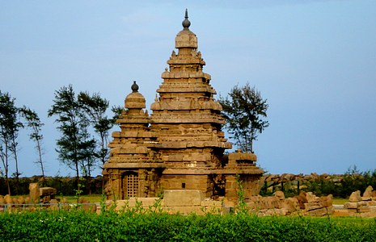

Shore Temple
Shore temple aggregates the aesthetic value of a Mahabalipuram further more. Built in the 7th century,
the shore temple stands majestically as an example of brilliant architectural style of pallavas. According
to the history, this temple was built during the reign of a pallava king, Rajasimha. It was his period,
when the art of pallavas reached to pinnacle of glory. As this temple did not face plunder over the centuries,
this pallavas faultless piece of art were preserved.
The shore temple encloses three shrines. The outstanding ones are dedicated to Lord Shiva and Lord Vishnu,
who were considered to be prominent gods in Hindu culture. The critical part of the temple is called as
garbhagraha where the ShivaLinga resides. In the back there are two shrines, one belongs to Lord Vishnu
and other belongs to ksatriyasimneswara and they face each other. Images were sculpted in panels which denote
the activities of day to day life of people lived back then and it also depicts the stories of Hindu gods.
The unique feature of the Shore temple is that it was carved from a five storied rock. It is said to be the
foremost stone structure carved by pallavas. It represents the typical Dravidian temple style of architecture
as its pyramidal structures raise above the sea level up to 60feet and platform width extends to 50 feet.
Another prominent feature of this temple is that its structure is designed in such a way that it clenches
the first rays of sun and it floodlight the waters after the sunset.